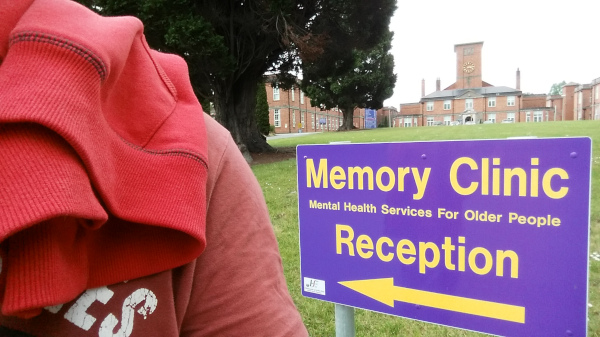

Piątek w trzecim tygodniu
Pobudka o 5:40 nie nastraja pokojowo do życia. No ale trudno, jest piątek, istatni dzień tygodnia w robocie. Jakis debil włączył alarm i wyje już 20 minut, współczuję tym co jeszcze chcieli pospać – nie pośpią! W pracy widziałem, że oprowadzają nowego gościa, mieli przyjąć jakiegoś shift managera, żeby nas mocniej uciskać, chcą zrobic chyba : 1 manager na 1 pracownika. “Synek” się nie ucieszył pewnie, bo sam aplikował na to stanowisko, olali go. Po pracy poszedłem się przewietrzyć do szpitala psychiatrycznego w Ardee, chłopaki mówią, że tam mieszkam i mnie na przepustki do pracy wypuszczają, więc idę zobaczyć gdzie mieszkam rzekomo. Rozglądałem sie tam uważnie wokoło bo niewm czy oni tych pacjentów nie wypuszczają czasami, trzeba być czujnym. Pytałem o wolne pokoje, ale mówią, że nie mają, tyle oszołomów w Irlandii się namnożyło. No cóż, może innym razem, darmowe lokum by sie przydało i żarcie, tylko programować :). Zrobiłem zdjecia to dołączam.
Wysłali mi e-mail z hostingu, że moja poczta na stronie generuje jakiś spam i żebym sie skontaktował z moim developerem. Skontaktowałem się sam ze sobą, żeby to naprawić, dodać pole reCaptcha. Później sie tym zajmę, niew iem jeszcze jak :). Nie będą mi tu nic blokować! Tak straszyli, zablokujemy Ci pocztę! Gita zacząłem z Maciejem Aniserowiczem, no bo może by online to wrzucić, chociaż z drugiej strony... A i tak nikt tam nie zajrzy, wrzucę jak ogarnę to wszystko.